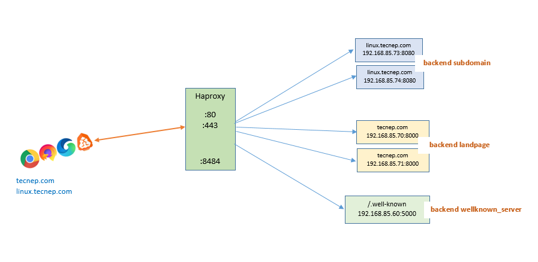

Configuration
Now let’s configure haproxy in /etc/haproxy/haproxy.cfg
The configurate is as shown in the following diagram. We have all together five backend server and one proxy server. This configuration has covered optimal feature provided in open source version of haproxy.

The configuration is divided into four groups. Haproxy version 2.X doesn’t have defaults section, which was mandatory in previous version. Let’s discuss individual section one by one.
a) Global section
b) frontend section
c) backend section
d) Statistics
a) Global section
The glboal section contains global parameter to be applied for all the settings. Maximum number of connection, log, socket, chroot, user, group are defined here. SSL cipher and its lifetime should also be defined here. The processing nature of proxy can either be multithreading or multiprocessing, which is also defined here.
#-------Global configuration--------------------------
global
maxconn 50000
stats socket /var/run/haproxy.stat mode 600 level admin
log 127.0.0.1:514 local2
chroot /var/empty
pidfile /var/run/haproxy.pid
user haproxy
group haproxy
daemon
# To enable multithreading with four thread
nbthread 4
tune.ssl.default-dh-param 2048
tune.ssl.lifetime 3600
ssl-default-bind-options no-sslv3
ssl-default-bind-ciphers ECDHE-RSA-AES256-GCM-SHA384:ECDHE-RSA-AES128-GCM-SHA256:ECDHE-RSA-AES256-SHA384:ECDHE-RSA-AES128-SHA256:ECDHE-RSA-AES256-SHA:DHE-RSA-AES256-SHA:ECDHE-RSA-AES128-SHA:DHE-RSA-AES128-SHA
ssl-default-server-options no-sslv3
ssl-default-server-ciphers ECDHE-RSA-AES256-GCM-SHA384:ECDHE-RSA-AES128-GCM-SHA256:ECDHE-RSA-AES256-SHA384:ECDHE-RSA-AES128-SHA256:ECDHE-RSA-AES256-SHA:DHE-RSA-AES256-SHA:ECDHE-RSA-AES128-SHA:DHE-RSA-AES128-SHA
cache cacher1
total-max-size 10
max-age 300
b) Frontend section
The frontend section define which port to listen from the client/browser. It’s mode of operation should either be layer 7 http or layer 4 TCP. Forwarding to https , writing acls, context switching and adding security header for the defined port is also written here. Since, it is a frontend you can restrict certain page or path to your backend server.
#------------Frontend default port------------------------------
frontend public
bind *:80
bind *:443 ssl crt /path/to/certficate.pem
mode http
log global
option httplog
option dontlognull
monitor-uri /monitoruri
maxconn 50000
timeout client 30s
http-request cache-use cacher1
http-response cache-store cacher1
#------Forward http to https---------------------------------
http-request add-header X-Forwarded-Proto https if { ssl_fc }
http-request set-header X-Forwarded-Port %[dst_port]
redirect scheme https if !{ ssl_fc }
#--------Forward .well-known to wellknown_server----------------
acl known_path path_beg /.well-known
use_backend wellknow_server if known_path
#----------Forward to backend according to domain name
use_backend landpage if { ssl_fc_sni tecnep.com } # content switching based on SNI
use_backend linux if { ssl_fc_sni linux.tecnep.com } # content switching based on SNI
#-----------Security Headers-------------------#
http-response set-header Strict-Transport-Security max-age=31536000;\ includeSubDomains;\ preload;
http-response set-header X-Frame-Options SAMEORIGIN
http-response set-header X-Content-Type-Options nosniff
http-response set-header X-XSS-Protection "1; mode=block"
http-response replace-header Set-Cookie (.*) \1;\ Secure
option forwardfor
option http-server-close
#------------Restrict some page or path
acl network_allowed src 1.1.1.1
acl restricted_page path_reg /api/test/*
acl restricted_page path_reg swagger-ui.html
http-request deny if restricted_page !network_allowed
errorfile 400 /etc/haproxy/error-page/error.http
c) Backend section
The backend server mode is defined as in the frontend with the supported load balancing algorithm. You can forward source ip to backend server using X-Forward-For and X-Client-IP. Security policy for specific backend may also apply. Compression is also supported by haproxy.
#-----Backend server--------------------------------------------#
backend subdomain
mode http
option httpchk GET /echo HTTP/1.0
balance leastconn
option prefer-last-server
retries 2
option redispatch
timeout connect 10s
timeout server 60s
cookie JSESSIONID prefix
server subdomain01 192.168.85.73:8080 cookie subdomain01 check inter 2000
server subdomain02 192.168.85.74:8080 cookie subdomain02 check inter 2000
#--------Backend landpage-------------------------------#
backend landpage
mode http
option forwardfor
compression algo gzip
compression type text/css text/html text/javascript application/javascript text/plain text/xml application/json image/svg+xml
http-request add-header X-Forwarded-For %[src]
http-request add-header X-Client-IP %[src]
#----------Security Policy for landpage--------------#
http-response set-header Strict-Transport-Security max-age=31536000;\ includeSubDomains;\ preload;
http-response set-header X-Frame-Options SAMEORIGIN
http-response set-header X-Content-Type-Options nosniff
http-response set-header X-XSS-Protection "1; mode=block"
option httpchk GET /echo HTTP/1.0
balance leastconn
option prefer-last-server
retries 2
option redispatch
timeout connect 10s
timeout server 60s
cookie JSESSIONID prefix
server land01 192.168.85.70:8000 cookie land01 check inter 2000
server land02 192.168.85.71:8000 cookie land02 check inter 2000
#--------Backend wellknown_server-------------------------------#
backend wellknow_server
mode http
option prefer-last-server
retries 2
option redispatch
timeout connect 10s
timeout server 60s
server wellknown01 192.168.85.60:5000
d) Statistics section
listen stats section enables haproxy to listen a port and visualize the all activity data. Here, you can define path, authentication and a port. As, it is a webpage, it must be in mode http. You can view http://Haproxy_IP:8484 from your browser.
#------------Enabling stat page for graphical view
listen stats
bind *:8484
option prefer-last-server
retries 2
option redispatch
timeout connect 10s
timeout client 30s
timeout server 60s
mode http
stats enable
stats hide-version
stats realm Haproxy\ Statistics
stats uri /stats
stats auth admin:password
You can download/copy full configuration from here and customize as per your need.
Pratik Gautam pratikgautm@gmail.com